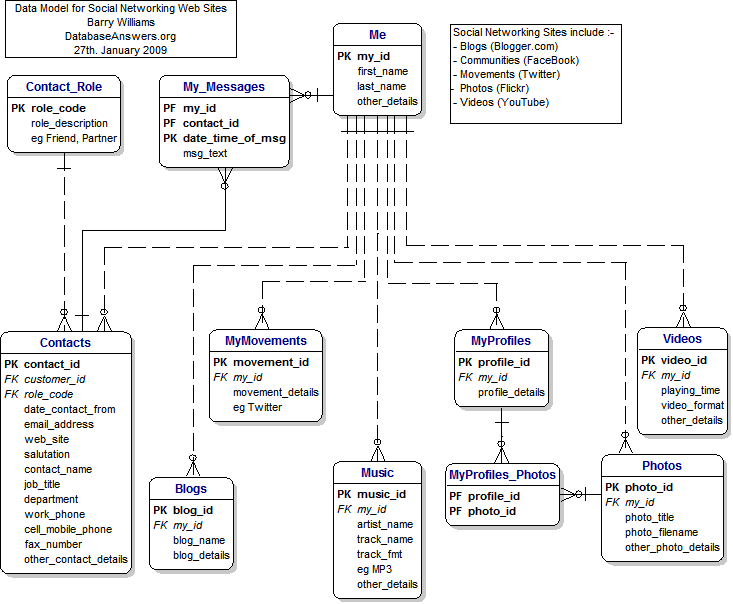

|
Email me if you would like an Access Database.
Here is a simple Data Model for Facebook Emails,
and a version of the Data Model with Wall Posts.
If you new to Databases, you will find my new Tutorial helpful to Understand the Database Schema.

Thanks to Brian Murphy for this update on Social Networking Solutions :-
TechCrunch offers a comparison of
analyses Social Network Platforms
and Features
I am using Ning, which is the most popular, with 70,000 Communities.
Two others worth taking a look at are
BoonEx and
KickApps.
There's a pretty good implementation of the KickApps solution at SkiNet
Also worth checking out is Jeremiah's Blog.
Social Networking Sites include :-
Bebo
BlackPlanet
Current - Create your own TV Station
CyWorld
FaceBook -
"Facebook is a social utility that connects you with the people around you."
Friendster
Global Giving and
The Big Give
-
Charitable Social Networks that let you choose from a list of Global Projects looking for funding and makes it simple for you to give to the projects of your choice, and track the impact of your generosity.
Google Gadgets - widgets for your Web Site.
Google's OpenSocial
Common APIs for social applications across multiple web sites.Built on Google Gadgets (cf) .
Google's Orkut
Habbo -
A cute and colourful virtual world which is a "hangout for teenagers".
iGoogle - "Your home on the Internet".
iLike - "Discover new music with friends" - links to Facebook.
I'm in Like You Looks great
Kiva -
A Charitable Social Network, putting would-be entrepreneurs in developing countries in touch with people with money who want to help.
LinkedIn Networking for Professionals
Live Spaces from Microsoft
MissionFish (UK) - you can "support your favourite causes through eBay".
MySpace - "A Place for Friends"
Plaxo Has reinvented itself with 'dynamic profiles' -
Brings you 'people feeds' from other Networks, such as Flickr,Last.fm, MySpace, Yahoo 360 and YouTube.
Photophlow - share Flickr photos in real-time.
Second Life - "Your place. Your imagination"
RockYou -
Described as "A leading developer of applications for Social Networking Sites", with links to Bebo and Facebook.
.
Saga Zone - for the over-50's in the UK
Slide -
Makes it easy to create Slideshows - with links to Bebo and Facebook.
Twitter
TwitterVision
Zopa -
Zopa is an online Bank that offers loans with a new service that enables you to see a photo, pitch and credit rating of the person asking for the loan.
And here are some other interesting links :-
Mashable - Social Networking News
MetaPLace - "Build a Virtual Apartment and put it on your Web Site"
Ning - "create Your Own social network for Anything".
"Ning is the only online service where you can create, customize, and share your own Social Network for free in seconds."
Xing - "XING powers relationships for the world’s business professionals."
|
|